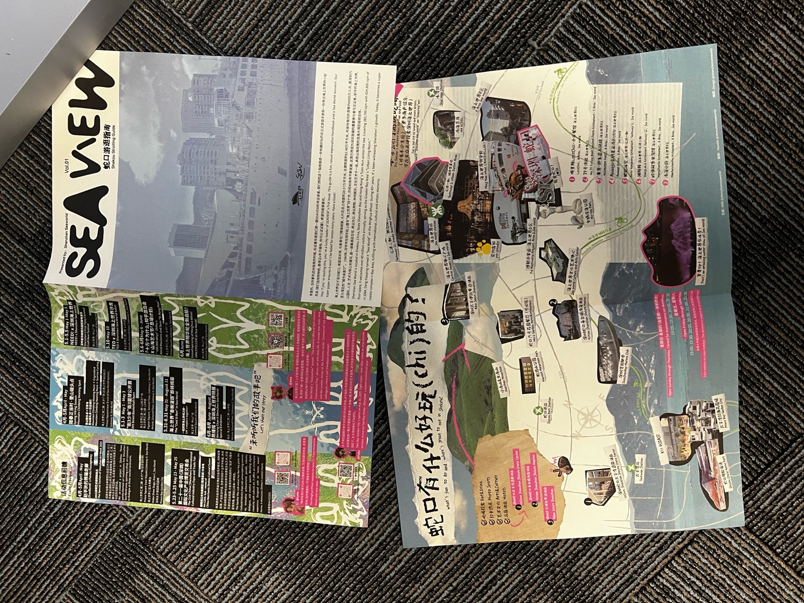
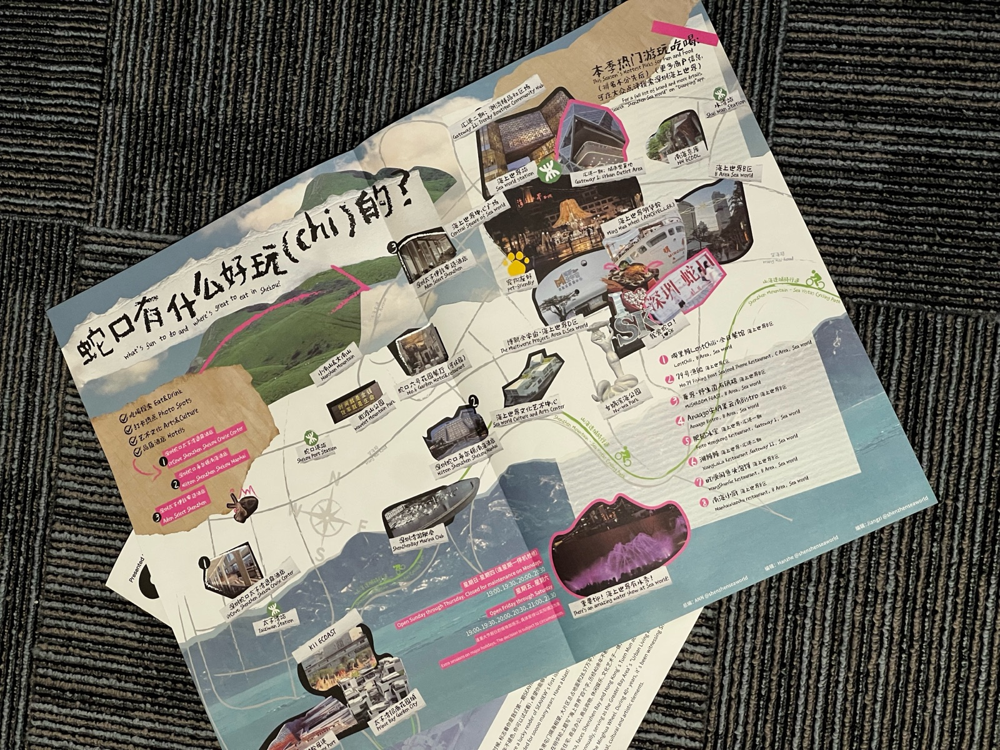
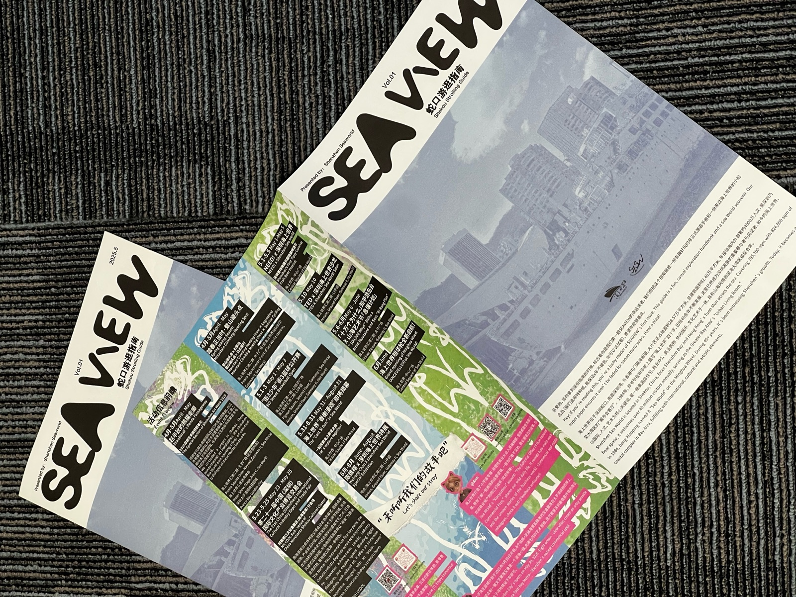
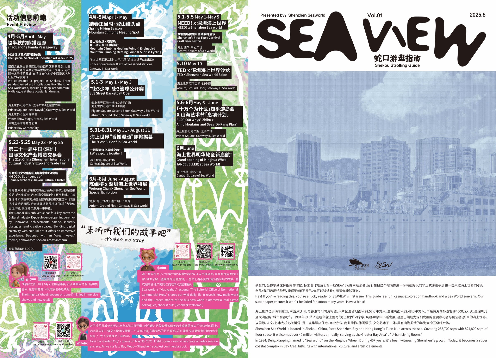
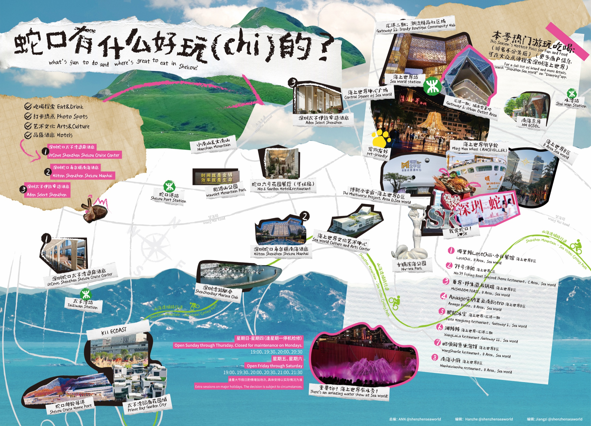

Seaview
蛇口游逛手册
Shenzhen Seaworld 深圳海上世界
Hey! If you're reading this, you're a lucky reader of SEAVIEW's first issue. This guide is a fun, casual exploration handbook and a Sea World souvenir. Our super paper ensures it won't be faded for soooo many years. Have a blast!
Shenzhen Sea World is located in Shekou, China, faces Shenzhen Bay and Hong Kong's Tuen Mun across the sea. Covering 285,700 sqm with 824,800 sqm of floor space, it welcomes over 40 million visitors annually, serving as the Greater Bay Area's "Urban Living Room." In 1984, Deng Xiaoping named it "Sea World" on the Minghua Wheel. During 40+ years, it's been witnessing Shenzhen's growth. Today, it becomes a super coastal complex in Bay Area, fulfilling with international, cultural and artistic elements.
亲爱的，当你拿到这份指南的时候，标志着你是我们第一期SEAVIEW的幸运读者。我们想把这个指南做成一份有趣好玩的非正式游逛手册和一份来过海上世界的小纪念品（我们选用特种纸，能保证x年不褪色，你可以试试看），希望你能够喜欢。
海上世界位于深圳蛇口，南面深圳湾，与香港屯门隔海相望，大片区总占地面积28.57万平方米，总建筑面积82.48万平方米，年接待海内外游客约4000万人次，是深圳乃至大湾区的“城市会客厅”。1984年，邓爷爷在明华轮上题写“海上世界”四个字，历经40余年不断发展，这里已然成为深圳发展的重要参与者与见证者。如今的海上世界，以国际、人文、艺术为核心关键词，是一座集酒店住宅、商业办公、商业购物、休闲娱乐、文化艺术于一体，具有山海风情的滨海大湾区级综合体。



Vol.01 创始刊设计

